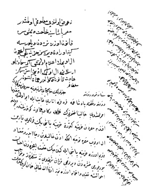

Belge 12: TKSA E. 2457/27, veziriâzam ‘arzı
Belge 12
“Sa’âdetlü ve devletlü sultanım hazretlerinin hâkipây-i şerîflerine ma’rûz-i bendegî budur ki:
I. Devletlü ve ‘azametlü pâdişahıma kara kara enarı gâyet ile eyü olmağla mukaddema ısmarlanmışdı, hâliyâ dokuz yük gelmekle rikâb-i hümâyûna gönderilmişdir.
II. Benim devletlü efendim, Mısır’dan hazine getüren Hazine-başı beg kulları yarın el öpüp Mısır’a teveccüh etmeğe izn-i ‘alîlerin ricâ ider ve hil’at içerüden ihsan buyrulur mu taşradan virelüm mü; fermân-i şerîflerine muntazıruz ve mevâcib ahvâline takayyüd ve ihtimâm üzereyüz. İnşallâhu ta’âlâ hemân Girit’e gidecek kulları yollandığı gibi ‘ulûfeyi dahi virürüz,
III. Avn-i Hakk’la her husûsda kusûr olunmak ihtimâli olmayub devletleri olduğu eclden her bâr tasdi’a cür’et olunmayub kulluğumuzda makdurumuz sarf üzereyüz. Bâkî fermân sultanımındır.
IV. Ve benim devletlü efendim, Mısır’dan ma’zûl Seyyid Mehmed Paşa’dan fermân-i şerîfleriyle akça istediğümüzde getürdüğü defteri ‘aynı ile gönderilüb rikâb-i hümâyûnlarına ‘arz olunmuşdur, her ne fermân-i şerîfleri olur ise emr efendilerimindir.”
H. H. Kösem Sultan’ın emri:
“Ne ‘arz olundu, ma’lûmumuz olmuşdur; Mısır Paşası’na hil’at dimişsiz, kanûn üzere nerden virülürse gine oradan viresiz, hazine begi içün el öpmek i’lâm olunmuş, eğer sa’âdetlü Arslanıma el öpmeğe izn isterseniz, âdet ve kanûn değüldür, hemân gitsün.”
Yorum:
1. Kösem’in veya pâdişahın bir hastalığı için nar, veziriâzam tarafından ısmarlanmış, Kösem’e gönderiliyor.
2. Venedik’le Girit savaşı sırasında Mısır her zamandan çok önem kazanmıştı. Mısır’dan her yıl gönderilen 500 bin altın hazine mâlî darlık içinde yuvarlanırken idare için yaşamsal önemdeydi. Girit’e Mısır’dan donanma için gemi geliyordu; devletin İskenderiye’de bir deniz üssü vardı. Mısır’dan askere zahîre, güherçile-barut gönderiliyordu. Kuzey-Afrika Garp Ocakları gibi Mısır’da da pâyitahttaki anarşi yüzünden yerel kuvvetler idareye el koymuşlar, Osmanlı askeri ortaların başbuğları, Osmanlı öncesinden kalan Memlûkler karşısında İstanbul’dan gönderilen paşalar hükümlerini yürütemiyorlardı.37İstanbul, Girit savaşı dolayısıyla Mısır’da otoritesini tazelemek bakımından çok duyarlıydı. Kullara maaş dağıtılması devletin bu dönemde belki en önemli sorunudur. Veziriâzam bu noktada Kösem’e güven vermeyi zorunlu bulmaktadır.
3. Veziriâzam, Kösem’e “kulluğunu” tekrarlamak gereğini duymaktadır.
37 J. Hathaway (yay.) The Arab Lands in Ottoman Era, “Introduction”, s. 1-19; J. Hathaway, Osmanlı Mısır’ında Hane Politikaları, çev. N. Özsoy, İstanbul, 2002.